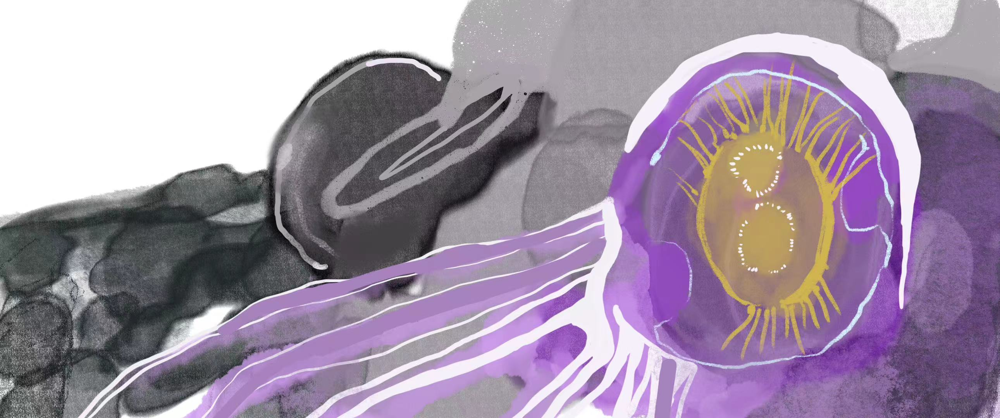
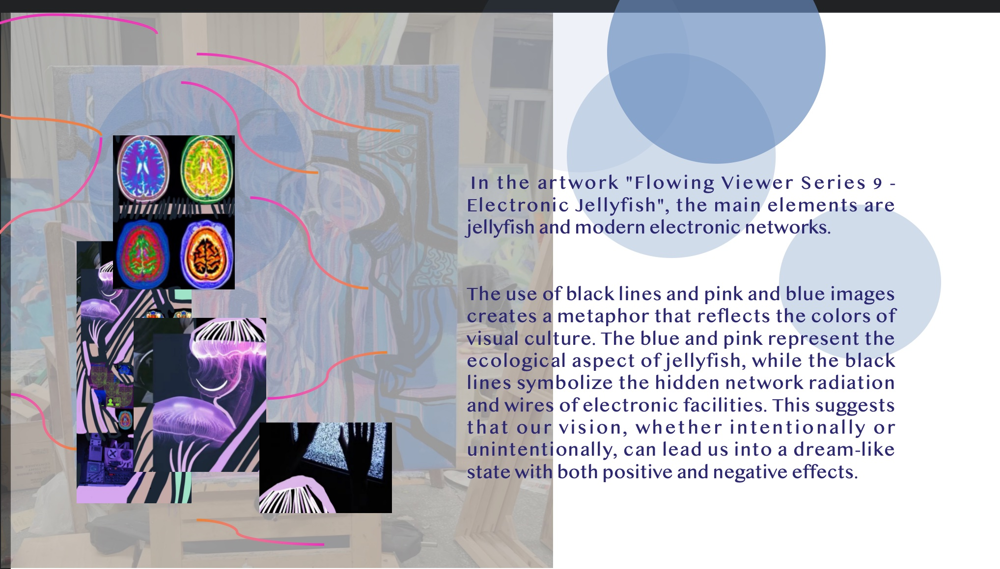
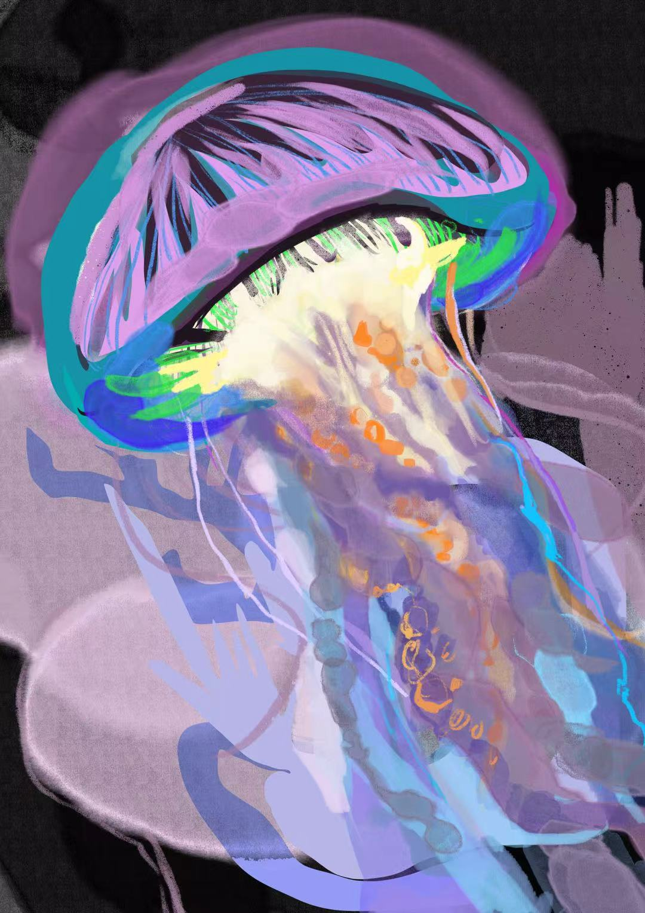
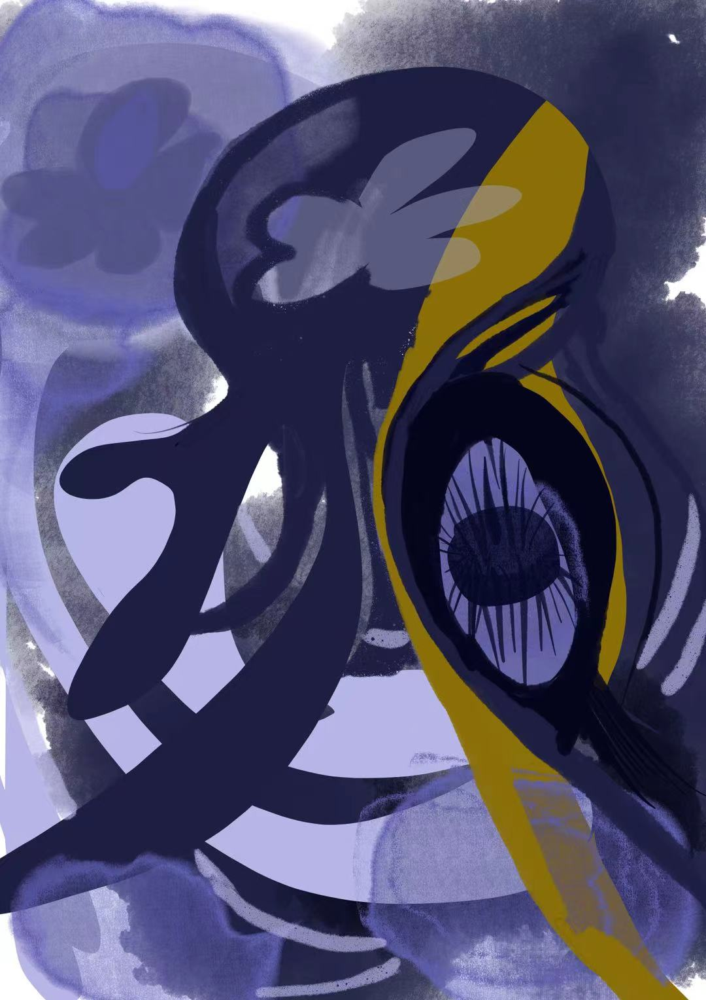

Fluxion_viewing
The Flowing Observer No. 9 series also experimentally demonstrates the research on the fluidity of species, geographical forms, and biological characteristics. Using digital or acrylic painting, it constructs a visual connection with the ocean, climate, and organisms, forming a media-species-reflective process.



